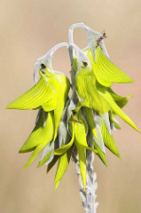

Simpson Desert full of life on camel trek Day 3
Simpson Desert full of life on camel trek Day 3
- By Lynne Sealie
- July 5, 2011
- Tags: Australia's species Blogs & news

Camp Day 3 (July 4th 2011). Lat -23 .93926. Long 138.57945. Elev 94 m. Time 4.06 pm.
By Paul Flemons, Australian Museum
Weather has been fine with a cool wind – good walking conditions.
Tip: Hover mouse over photo to see caption. Click on photos to see different sizes and/or make a comment on Flickr.
Long day of trekking – up at 6am, breakfast 7am. While Paul pinned the remaining microlepidoptera from last night’s light trapping, Beth packed up our equipment ready for loading onto the camels. At 9.00am all hands on deck for loading up the camels. At 9.30 the day’s walking began. Today we traversed a number of spinifex-covered sand dunes, interspersed by flat, wide swales covered in a range of grass species including Australian Dropseed Grass (Sporobolus australasicus) and Spinifex (Triodia basedowii). We came across a beautiful flowering shrub, the Green Bird Flower (Crotalaria cunninghamii) (photo 3), attended by an aggressive ant species. The ants had “robbed” the flowers by chewing through the wall of the sepal to access the nectar without fulfilling the usual requirement of pollen (photo 3).
Other interesting plants seen today include Sandhill Grevillea (Grevillea stenobotrya) (see photo 7). The recent rains have revived and rejuevenated this normally desolate part of the Simpson Desert. The dunes and the plains are blanketed in flowering forbs and grasses creating an unexpectedly verdant landscape in this normally dry red desert.
Highlights of the day
Birds: Red Capped Robin, Little Button-Quail, Brown Song Lark, Zebra Finches, Budgerigars.
Reptiles: Central Military Dragon (photo 4), Inland Taipan, Narrow-banded Snake (photo 8)
Scats: Fox scat full of mouse hair, unidentified scat with beetle carapaces in it.
Last night (3 July) we started light sheet trapping (photo 11 – Beth pinning while Charlie collects). Within minutes the sheet was covered in a mass of water beetles, backswimmers, boatmen, myriad microlepidoptera (moths), and weevils of all shapes and sizes. Some of the moths and other flying insects can be seen in photo 9. Later we attracted about a dozen predacious giant water bugs (photo 10) (Lethocerus insulanus), the largest Australian heteropteran which is sometimes a nuisance in fish farms (a far cry from the Simpson Desert!!). These giant bugs proceeded to harrass us for the remainder of the trapping session!
Camel trekking from previous days
- Follow camel trek collecting animals in the Simpson Desert, F.W. Qld. Story »